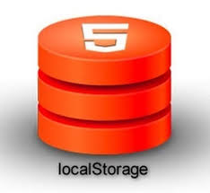
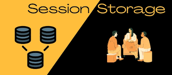

Armazenamento de Dados no Navegador
book_2 Armazenamento local e de sessão
exercise Usando JSON para armazenar objetos
exercise Segurança e boas práticas
exercise Mini projeto Prático
localStorage é um objeto nativo do navegador que permite salvar dados no computador do usuário de forma persistente (os dados ficam salvos mesmo depois de fechar o navegador ou desligar o computador).

| Método | Descrição |
|---|---|
| setItem(chave, valor) | Armazena um valor com a chave especificada |
| getItem(chave) | Recupera o valor associado à chave |
| removeItem(chave) | Remove o item associado à chave |
| clear() | Remove todos os itens armazenados |
| key(index) | Retorna a chave no índice especificado |
| length | Propriedade que retorna o número de itens armazenados |
Salve seu nome completo, idade e cidade usando localStorage. Depois recupere e mostre no console.
localStorage.setItem("nomeCompleto", "Ana Silva");
localStorage.setItem("idade", "25");
localStorage.setItem("cidade", "São Paulo");
console.log(localStorage.getItem("nomeCompleto"));
console.log(localStorage.getItem("idade"));
console.log(localStorage.getItem("cidade"));
Salve um contador de visitas. Toda vez que rodar o código, aumente em 1.
let contador = localStorage.getItem("contadorVisitas");
if (contador === null) {
contador = 0;
} else {
contador = parseInt(contador);
}
contador++;
localStorage.setItem("contadorVisitas", contador);
console.log("Número de visitas: " + contador);
Crie um botão que alterna um tema escuro (dark mode). Salve a preferência.
<button onclick="trocarTema()">Trocar Tema</button>
<script>
function trocarTema() {
let temaAtual = localStorage.getItem("tema");
if (temaAtual === "dark") {
localStorage.setItem("tema", "light");
document.body.style.background = "white";
document.body.style.color = "black";
} else {
localStorage.setItem("tema", "dark");
document.body.style.background = "black";
document.body.style.color = "white";
}
}
// Aplicar tema salvo ao carregar
let temaSalvo = localStorage.getItem("tema");
if (temaSalvo === "dark") {
document.body.style.background = "black";
document.body.style.color = "white";
}
</script>
O Session Storage, ou Armazenamento de Sessão, é uma tecnologia de armazenamento web que permite que os desenvolvedores guardem dados temporários no navegador do usuário durante a sessão atual. Isso significa que os dados armazenados no Session Storage são mantidos enquanto a aba ou janela do navegador estiver aberta.

| Característica | localStorage | sessionStorage |
|---|---|---|
| Armazenamento | Local | Sessão |
| Tipo de dados | Strings | Strings |
| Tempo de vida | Permanente | Temporário |
| Compartilhamento entre abas | Sim | Não (cada aba tem o seu) |
| Duração | Para sempre (até limpar) | Só enquanto a aba está aberta |
| Capacidade | 5-10 MB | 5-10 MB |
| Uso típico | Preferências do usuário, dados persistentes | Dados temporários da sessão, estado da aplicação |
Abra duas abas do mesmo site. Salve algo no localStorage em uma aba e veja na outra. Depois faça o mesmo com sessionStorage.
// Na aba 1
localStorage.setItem("teste", "visível nas duas abas");
sessionStorage.setItem("testeSessao", "só aparece nesta aba");
// Na aba 2 → localStorage vai mostrar, sessionStorage não
console.log(localStorage.getItem("teste")); // funciona
console.log(sessionStorage.getItem("testeSessao")); // null
Crie um contador que zera quando você fecha a aba (use sessionStorage).
let cont = sessionStorage.getItem("contadorSessao");
if (!cont) {
cont = 0;
}
cont = Number(cont) + 1;
sessionStorage.setItem("contadorSessao", cont);
document.body.innerHTML += "<h1>Você recarregou esta aba " + cont + " vezes</h1>";
Os cookies em páginas web são pequenos blocos de texto que um website armazena no seu navegador (browser) e/ou no disco rígido do seu computador ou dispositivo móvel quando você o visita.
Os cookies geralmente são usados para armazenar informações sobre o uso do site, como o histórico de navegação, os itens adicionados ao carrinho de compras, as preferências do usuário, entre outros dados.
Os cookies podem ser classificados de diversas maneiras, mas os seus usos mais comuns incluem:
Quanto à Duração:
Quanto à Origem:
Em resumo, os cookies são ferramentas essenciais para a personalização e funcionalidade dos websites, mas é importante estar ciente das questões de privacidade associadas ao seu uso.
Muitos países têm regulamentações rigorosas sobre o uso de cookies, exigindo que os websites obtenham o consentimento dos usuários antes de armazená-los.
Para manipular cookies, vocé precisa saber duas coisas:
document.cookie = "nome=João; expires=Fri, 31 Dec 2024 23:59:59 GMT; path=/";
Isso cria um cookie chamado "nome" com o valor "João", que expira em 31 de dezembro de 2024 e está disponível em todo o site.
const cookies = document.cookie;
console.log(cookies);
Isso recupera todos os cookies disponíveis como uma única string.
Para armazenar cookies, vocé precisa ter permissão de escrita no domínio atual. Além disso, os cookies são enviados ao servidor em cada requisição HTTP, o que pode impactar a performance se muitos cookies forem usados.
Como localStorage só aceita strings, usamos JSON.stringify() e JSON.parse() para salvar e recuperar dados complexos, como objetos e arrays.
// Objeto complexo
const usuario = {
nome: "João",
idade: 30,
interesses: ["música", "programação", "games"],
ativo: true
};
// Salvando
localStorage.setItem("usuario", JSON.stringify(usuario));
// Recuperando
const usuarioSalvo = JSON.parse(localStorage.getItem("usuario"));
console.log(usuarioSalvo.nome); // João
// Código HTML
<body>
<h1>Meus Links Favoritos</h1>
<input type="text" id="url" placeholder="Cole a URL aqui">
<input type="text" id="titulo" placeholder="Título do link">
<button onclick="adicionar()">Adicionar</button>
<ul id="lista"></ul>
<script>
function carregarFavoritos() {
const favoritos = JSON.parse(localStorage.getItem("favoritos") || "[]");
const lista = document.getElementById("lista");
lista.innerHTML = "";
favoritos.forEach(fav => {
const li = document.createElement("li");
li.innerHTML = `<a href="${fav.url}" target="_blank">${fav.titulo}</a>
<button onclick="remover('${fav.url}')">Remover</button>`;
lista.appendChild(li);
});
}
function adicionar() {
const url = document.getElementById("url").value;
const titulo = document.getElementById("titulo").value || url;
if (!url) return alert("Digite uma URL");
let favoritos = JSON.parse(localStorage.getItem("favoritos") || "[]");
favoritos.push({ url, titulo });
localStorage.setItem("favoritos", JSON.stringify(favoritos));
document.getElementById("url").value = "";
document.getElementById("titulo").value = "";
carregarFavoritos();
}
function remover(urlParaRemover) {
let favoritos = JSON.parse(localStorage.getItem("favoritos") || "[]");
favoritos = favoritos.filter(fav => fav.url !== urlParaRemover);
localStorage.setItem("favoritos", JSON.stringify(favoritos));
carregarFavoritos();
}
// Carregar ao abrir a página
carregarFavoritos();
</script>
</body>
</html>
function getSafe(key, valorPadrao) {
try {
const item = localStorage.getItem(key);
return item ? JSON.parse(item) : valorPadrao;
} catch (e) {
console.error("Erro ao ler localStorage", e);
return valorPadrao;
}
}
Crie uma página com:
Altere o projeto para utilizar sessionStorage ao invés de localStorage, de forma que o usuário seja deslogado ao fechar a aba.
Qual o impacto dessa mudança em seu código? E no funcionamento de sua lógica?